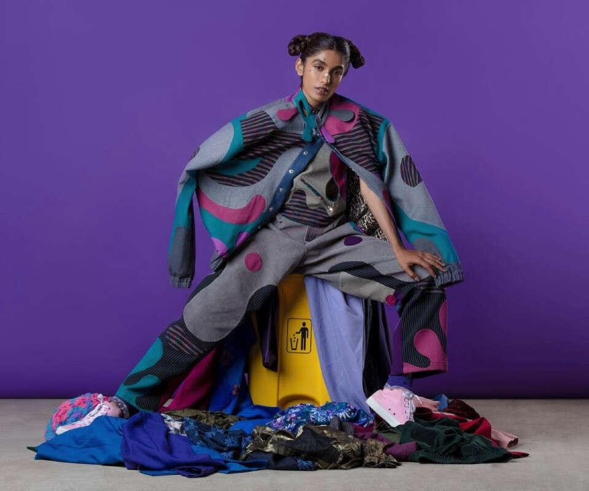

01 / Criação
A moda como laboratório.
Na contemporaneidade, a alta-costura continua sendo espaço de experimentação, trabalho artesanal e construção de imagens marcantes. Ao mesmo tempo, novas tecnologias ampliam as possibilidades de criação.

Moda masculina
Alfaiataria, streetwear e peças clássicas convivem em propostas cada vez mais diversas.

Moda feminina
Designers e consumidores exploram novas silhuetas, referências e possibilidades de expressão.

Sustentabilidade
Reutilização, materiais responsáveis e consumo consciente estão no centro de discussões importantes para o futuro do setor.